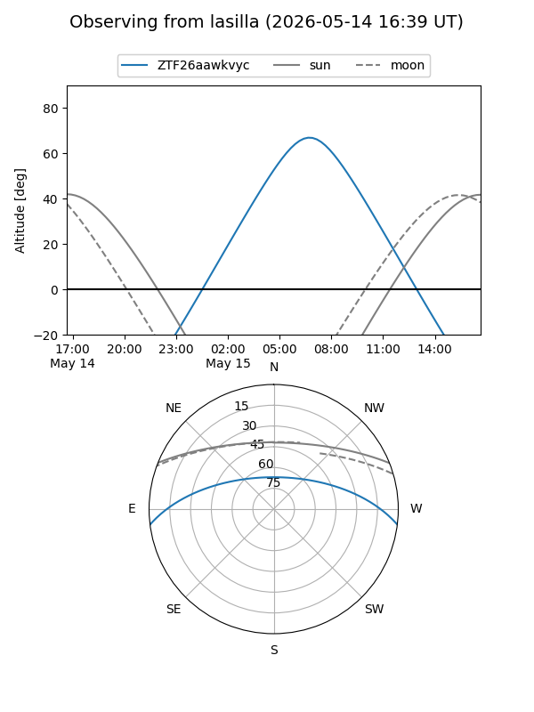
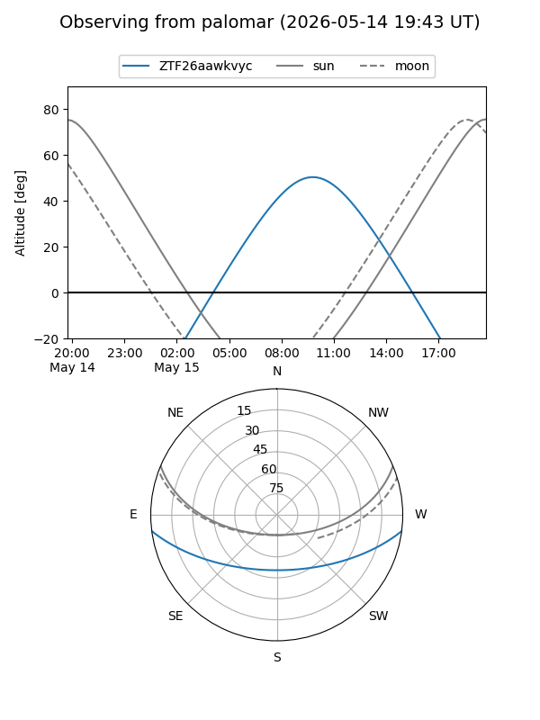
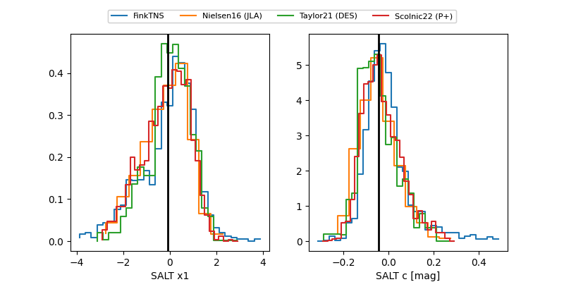

ZTF26aawkvyc
Target ZTF26aawkvyc at 2026-05-15 10:29
Aliases and brokers:
FINK: link
Lasair: link
ALeRCE: link
alt names
ZTF26aawkvyc (ztf,fink_ztf)
Coordinates:
equatorial (ra, dec) = 262.8691,-6.20659
equatorial (HMS+DMS) = 17:31:28.58,-06:12:23.71
galactic (l, b) = (17.8827,+14.66530)
Flags:
likely cv
Photometry:
last ztfg=15.57
3 ztfg detections
Lightcurve
Visibility


Additional plots
